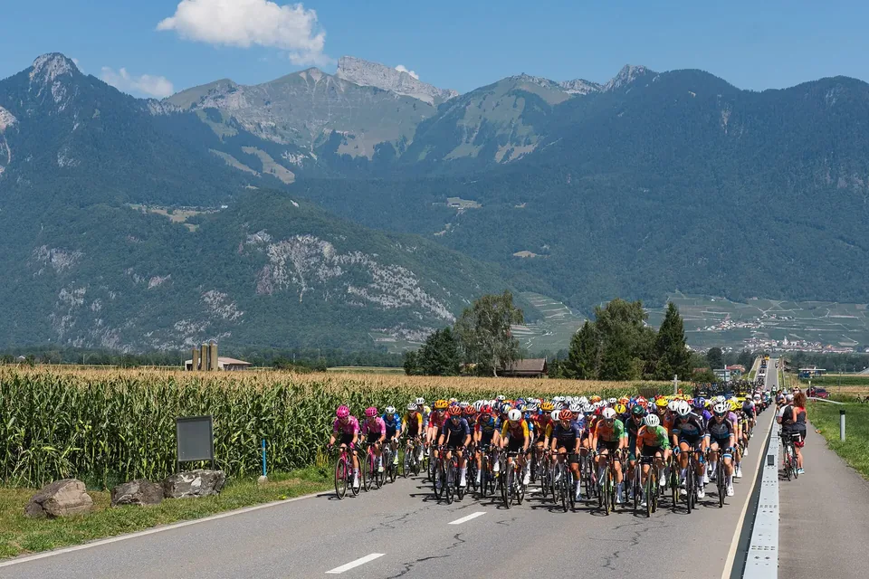

RTF, Radmarathon, Jedermannrennen oder Gran Fondo: Welches Radevent passt zu dir?
Peloton der Tour de France Femmes 2026 bei Vionnaz, Wallis. Foto: Christian David, Wikimedia Commons, CC BY-SA 4.0
RTF, Radmarathon, Jedermannrennen, Gran Fondo – im Radsport heißen Veranstaltungen sehr unterschiedlich, und nicht jede ist ein Rennen. Hier erfährst du, was hinter den Begriffen steckt, welche Regeln gelten und welches Format zu deinem ersten organisierten Radevent passt.
Zwei Welten: Tour oder Rennen
Die wichtigste Frage zuerst: Willst du ankommen oder gegen die Uhr fahren? Radevents lassen sich in zwei Gruppen teilen:
- Breitensport-Touren wie RTF, CTF, Radmarathon und Brevet: gemeinsam fahren, mit Verpflegung, aber ohne Zeitmessung und ohne Platzierung.
- Rennen wie Jedermannrennen und Gran Fondo: mit Zeitnahme, Ergebnisliste und Altersklassen.
Der deutsche Radsportverband tritt in seinen aktuellen Regelwerken als German Cycling (GC, früher BDR) auf[1]. Die folgenden Regeln stammen aus diesen Regelwerken sowie von Cycling Austria und dem Weltverband UCI.
| Format | Zeitnahme | Länge | Lizenz nötig? | Charakter |
|---|---|---|---|---|
| RTF (Radtourenfahrt) | verboten | 20–199 km | nein | Tour auf der Straße mit Verpflegung |
| CTF (Country-Tourenfahrt) | verboten | 15–99 km | nein | Tour auf Feld- und Waldwegen |
| Radmarathon (nach GC) | verboten | ab 200 km | nein | lange Tour mit Verpflegung |
| Brevet | verboten | 200 bis 1.000 km | nein | selbstständig nach GPS, ohne Verpflegung |
| Jedermannrennen | ja | je nach Rennen | Tageslizenz | Rennen mit Wertung nach Altersklassen |
| UCI Gran Fondo | ja, gesamte Strecke | 80–225 km | je nach Serie | Rennen mit Qualifikation zur WM |
Längen und Regeln nach den Regelwerken von German Cycling und der UCI[1][2][4][5]. Viele Veranstalter nennen auch kürzere Touren „Radmarathon“ – entscheidend ist, was in der Ausschreibung steht.
RTF: der entspannte Einstieg
Radtourenfahrten sind laut Regelwerk Breitensportveranstaltungen, die Vereine an einem festen Termin ausrichten. Das Streckenangebot beginnt bei 20 und endet bei 199 Kilometern, unterwegs gibt es Verpflegungs-Checkpoints mit Getränken und „radfahrergerechten Snacks“[1]. An den Kontrollstellen wirst du verpflegt, gleichzeitig wird deine Durchfahrt bestätigt – per Stempel oder digital[3].
Was du außerdem wissen solltest[1]:
- Keine Uhr: Die Zeitnahme ist bei Breitensportveranstaltungen ausdrücklich verboten. Niemand misst, wie schnell du bist.
- Öffentliche Straßen: Die Straßenverkehrsordnung gilt. Ampeln, Vorfahrt und Rechtsfahrgebot gehören dazu.
- Helmpflicht: Für alle Teilnehmenden einer RTF besteht Helmpflicht – anders als im normalen Straßenverkehr, wo es für Radfahrende in Deutschland keine gesetzliche Helmpflicht gibt[9].
- Strecke: In der Regel ausgeschildert. Manche Veranstalter führen ganz oder teilweise per GPS-Track; das steht im Breitensportkalender.
- E-Bikes sind zugelassen, solange die Unterstützung bei 25 km/h endet.
- Alter: Kinder und Jugendliche bis 14 Jahre fahren nur mit einer erwachsenen Aufsichtsperson; Jugendliche zahlen bis zum 18. Geburtstag kein Startgeld.
- Wertung: Wer gefahrene Kilometer sammeln möchte, braucht eine Breitensport-Lizenz. Mitfahren kannst du auch ohne.
Für Gravel- und Mountainbike-Fans gibt es dasselbe im Gelände: Die CTF ist „die breitensportliche Variante des Offroad-Fahrens“ auf öffentlichen Feld- und Waldwegen, mit Strecken von 15 bis 99 Kilometern, Verpflegung, Helmpflicht und ebenfalls ohne Zeitnahme[2].
Radmarathon und Brevet: wenn es weit wird
Im Sinne des Verbands sind Radmarathons Radtourenfahrten ab 200 Kilometern Streckenlänge[1]. Strecken über 200 Kilometer dürfen erst ab 18 Jahren gefahren werden. Wer es noch selbstständiger mag, fährt ein Brevet: laut Regelwerk ein Radmarathon „auf niedrigem organisatorischem Niveau“ – die Strecke ist nicht ausgeschildert, du navigierst mit einem GPS-Track und versorgst dich selbst. Übliche Distanzen sind 200, 300, 400, 600 und 1.000 Kilometer[1].
Jedermannrennen: das erste echte Rennen
Ein Jedermannrennen ist ein Rennen für Fahrerinnen und Fahrer ohne Jahreslizenz. Oft läuft es als Einlage-Rennen im Rahmen einer größeren Radsportveranstaltung[4]. Nach den Wettkampfbestimmungen startest du mit einer Tageslizenz, die Zeitmessung dient zur Erstellung von Ranglisten für Frauen, Männer und Altersklassen, und Geldpreise sind nicht erlaubt[4].
Wichtig: Ein Jedermannrennen ist nicht automatisch auf gesperrten Straßen unterwegs. Die Bestimmungen verlangen, dass die Teilnehmenden jederzeit die Straßenverkehrsvorschriften einhalten, und schreiben Streckenposten an Kreuzungen sowie Führungs- und Schlussfahrzeuge vor[4]. Ob die Strecke gesperrt ist, steht in der Ausschreibung. Rennen auf öffentlichen Straßen brauchen eine behördliche Erlaubnis[8].
In Österreich heißen diese Veranstaltungen bei Cycling Austria „Cycling for All“. Dort gelten unter anderem: Mindestalter ist die Kategorie Junior:innen, es gilt Helmpflicht, die Straßenverkehrsregeln sind jederzeit einzuhalten, und Musik und Kopfhörer sind während des Bewerbs verboten[6].
Gran Fondo: Rennen mit WM-Ticket
„Gran Fondo“ heißt auf Italienisch „große Strecke“. Bei der UCI Gran Fondo World Series ist der Begriff genau geregelt: eine Serie für Amateure mit Massenstart, Zeitnahme über die gesamte Strecke und Straßenrennen zwischen 80 und 225 Kilometern[5]. Gewertet wird in Altersklassen (19–34 Jahre, danach in Fünf-Jahres-Schritten). Die besten 25 Prozent jeder Altersklasse qualifizieren sich für die UCI Gran Fondo World Championships – gerechnet nach der Zahl der Startenden. Ein Helm ist im ganzen Rennen Pflicht. Eine vollständige Straßensperrung empfiehlt die UCI, schreibt sie aber nicht vor[5].
Außerhalb dieser Serie verwenden viele Veranstalter den Namen freier, etwa für große Jedermann-Rundfahrten. Auch hier gilt: Die Ausschreibung sagt dir, ob es eine Zeitnahme, eine Sperrung und eine Lizenzpflicht gibt.
In der Gruppe auf der Straße: was die StVO erlaubt
Bei RTFs und vielen Jedermann-Veranstaltungen fährst du im öffentlichen Verkehr. Drei Regeln aus der Straßenverkehrsordnung solltest du kennen:
- Rechts fahren: „Es ist möglichst weit rechts zu fahren“[7].
- Nebeneinander: „Mit Fahrrädern darf nebeneinander gefahren werden, wenn dadurch der Verkehr nicht behindert wird; anderenfalls muss einzeln hintereinander gefahren werden.“[7]
- Geschlossener Verband: Mehr als 15 Radfahrende dürfen einen geschlossenen Verband bilden und dann zu zweit nebeneinander auf der Fahrbahn fahren. Der Verband muss für andere deutlich als solcher erkennbar sein; lange Verbände müssen Lücken für den übrigen Verkehr lassen[10].
Manche Vereine bieten RTFs im geschlossenen Verband an: Routecaptains bestimmen das Tempo, der angegebene Schnitt ist nach oben gedeckelt, und ein Schlussfahrer begleitet die Gruppe[1]. Für den Einstieg ist das ideal, wenn du noch wenig Erfahrung mit dem Fahren in der Gruppe hast.
Essen und Trinken auf langen Strecken
Auf einer langen Tour entscheidet die Verpflegung mit darüber, wie gut du ankommst:
- Kohlenhydrate: Für längere Belastungen gelten 30 bis 60 Gramm pro Stunde als sinnvolles Ziel; bei Belastungen über zweieinhalb Stunden können bis zu 90 Gramm pro Stunde helfen[11]. So hohe Mengen funktionieren nur mit einer Mischung verschiedener Zuckerarten, etwa Glukose und Fruktose[12].
- Tempo zählt: Die Empfehlungen hängen von der Intensität ab. Wer gemütlich unterwegs ist, braucht nicht unbedingt die Höchstmengen, die für Leistungssportler gelten[12]. Probier im Training aus, was du verträgst.
- Trinken: Ziel ist, einen Flüssigkeitsverlust von mehr als 2 Prozent des Körpergewichts zu vermeiden. Wie viel du schwitzt, findest du heraus, indem du dich vor und nach einer längeren Ausfahrt wiegst[13].
Bei einer RTF nimmt dir die Verpflegungsstelle einen Teil davon ab. Beim Brevet bist du selbst zuständig – plane Tankstellen, Bäckereien und Brunnen vorher ein.
Welches Format passt zu dir?
- Du willst einfach eine schöne, organisierte Runde fahren: eine RTF mit 50 bis 100 Kilometern, gern im geschlossenen Verband.
- Du fährst lieber im Gelände: eine CTF mit dem Gravelbike oder Mountainbike.
- Du suchst eine große Herausforderung ohne Stoppuhr: ein Radmarathon über 200 Kilometer oder ein Brevet.
- Du willst wissen, wo du im Vergleich stehst: ein Jedermannrennen oder ein Gran Fondo mit Altersklassenwertung.
Diese Zuordnung ist unsere Einschätzung, keine Vorgabe der Verbände. Bei jedem Format gilt: Lies die Ausschreibung, bevor du dich anmeldest – dort stehen Streckenlängen, Startzeiten, Lizenzregeln und ob die Straßen gesperrt sind.
Fazit
Für den Einstieg ist eine RTF fast immer die beste Wahl: kein Druck, gute Verpflegung, ausgeschilderte Strecke und viele Gleichgesinnte. Wer danach Lust auf mehr bekommt, steigert sich zum Radmarathon – oder probiert im Jedermannrennen aus, wie sich ein echtes Rennen anfühlt.
Finde dein nächstes Radevent
Radtourenfahrten, Radmarathons, Gravel-Events und Jedermannrennen in Deutschland, Österreich, der Schweiz und Südtirol.
Quellen
- German Cycling (BDR): Reglement Radtourenfahrten 2026 (Stand 28.08.2025). rad-net.de (PDF)
- German Cycling (BDR): Reglement Countrytourenfahrten 2026. rad-net.de (PDF)
- Bund Deutscher Radfahrer: FAQs Reglement Breitensport 2023. rad-net.de (PDF)
- Bund Deutscher Radfahrer: Wettkampfbestimmungen für Jedermann-Veranstaltungen, Ausgabe 04/2022. rad-net.de (PDF)
- UCI Gran Fondo World Series: Regulations. ucigranfondoworldseries.com
- Cycling Austria: Reglement Kapitel 15 „Cycling for All“, Fassung vom 12.03.2026. cyclingaustria.at (PDF)
- Straßenverkehrs-Ordnung (StVO), § 2 Straßenbenutzung durch Fahrzeuge, Abs. 2 und 4. gesetze-im-internet.de
- Straßenverkehrs-Ordnung (StVO), § 29 Übermäßige Straßenbenutzung, Abs. 2. gesetze-im-internet.de
- Straßenverkehrs-Ordnung (StVO), § 21a Sicherheitsgurte, Schutzhelme. gesetze-im-internet.de
- Straßenverkehrs-Ordnung (StVO), § 27 Verbände, Abs. 1–3. gesetze-im-internet.de
- Burke L. M., Hawley J. A., Wong S. H., Jeukendrup A. E.: Carbohydrates for training and competition. J Sports Sci 2011;29 Suppl 1:S17–27. doi:10.1080/02640414.2011.585473
- Jeukendrup A.: A step towards personalized sports nutrition: carbohydrate intake during exercise. Sports Med 2014;44 Suppl 1:S25–33. PMC4008807
- American College of Sports Medicine; Sawka M. N. et al.: Exercise and fluid replacement. Position stand. Med Sci Sports Exerc 2007;39:377–390. doi:10.1249/mss.0b013e31802ca597
Alle Quellen abgerufen am 4. November 2026. Regeln können sich ändern – maßgeblich ist immer die Ausschreibung der Veranstaltung. Einschätzungen ohne Quellenangabe sind unsere eigenen.